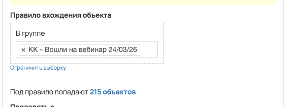
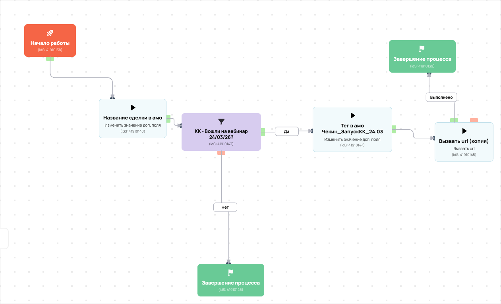

[AMO] [ED] КриптоКлуб чекины 90557
- ID процесса:
2415415 - Объект: Пользователи
- Статус: Ожидание событий
Описание из GetCourse
30.06.2026. Подробный ход процесса GetCourse:
Главное: В процесс попадают пользователи по правилу: В группе (ID: 4724538).
Процесс работает с объектом GetCourse: Пользователи. Текущий статус процесса: Ожидание событий.
Как идет процесс внутри GetCourse:
- Схема состоит из 9 блоков и 11 переходов.
Конец подробного хода процесса GetCourse.
https://vakas-tools.ru/account/base/amo.php?base_id=90557
Передача чекинов в амо Название сделок: чекин Воронка: КриптоКлуб Этап: Пришел на веб
Если по группе "КК - Вошли на вебинар 24/03/26" (с виджета https://investorpractic.getcourse.ru/entrance_24_03) то тег в амо "Чекин_ЗапускКК_24.03" (https://spi.bitrix24.ru/online/?IM_TASK=chat24416&IM_MESSAGE=2076702)
Понятное описание процесса
- Процесс работает с объектом GetCourse: Пользователи. Текущий статус процесса: Ожидание событий.
- На вход попадают данные так: В процесс попадают пользователи по правилу: В группе (ID: 4724538).
- Внутри схемы есть дополнительные проверки/ожидания: 1. Основные блоки: «КК - Вошли на вебинар 24/03/26?».
- Дальше процесс делает прямые вызовы Vakas: 1. Напрямую задействованы базы: 90557.
- Передача: 90557. База 90557: Формы и анкеты. Передаются параметры:
name,email,phone,getcourse_user_id,utm_source,utm_medium,utm_campaign,utm_content,utm_term,tag_deal_1и другие. - Что происходит в amoCRM: На входе в этап КРИПТОКЛУБ -> Пришел на веб [77815634] база ищет дубль и при необходимости переводит найденную сделку в рабочий этап.
Ход процесса в GetCourse
- Схема состоит из 9 блоков и 11 переходов.
- По типам: стартов 1, условий/ожиданий 1, вызовов URL 3, изменений полей 2, финалов 2.
Блоки процесса: что делают и зачем нужны:
- Блок
41910138«Начало работы» (старт). Что делает: Запускает выполнение схемы для объекта, который попал под правило входа процесса. Зачем нужен: Нужен как точка входа: от него GetCourse начинает движение объекта по схеме. Дальше: если результат «Выполнено», идет в «Название сделки в амо». - Блок
41910140«Название сделки в амо» (изменение поля). Что делает: меняет полеorder_name_amo(Установить равным). значение: чекин Зачем нужен: Нужен, чтобы записать внутри GetCourse технический признак/значение, которое потом используется в передаче или логике ветвления. Дальше: если результат «Выполнено», идет в «КК - Вошли на вебинар 24/03/26?». - Блок
41910143«КК - Вошли на вебинар 24/03/26?» (условие). Что делает: Проверяет условие: В группе (ID: 4724538). Зачем нужен: Нужен, чтобы разделить поток: подходящих пользователей/заказы отправить дальше, неподходящих перевести на другую ветку или завершить. Дальше: если результат «Нет», идет в «Завершение процесса»; если результат «Да», идет в «Тег в амо Чекин_ЗапускКК_24.03». - Блок
41910144«Тег в амо Чекин_ЗапускКК_24.03» (изменение поля). Что делает: меняет полеdeal_tag_1(Установить равным). значение: Чекин_ЗапускКК_24.03 Зачем нужен: Нужен, чтобы записать внутри GetCourse технический признак/значение, которое потом используется в передаче или логике ветвления. Дальше: если результат «Выполнено», идет в «Вызвать url (копия)». - Блок
41910145«Вызвать url (копия)» (вызов URL). Что делает: Передает в Vakas: 90557. База 90557, канал «Формы и анкеты» (POST); параметры:name,email,phone,getcourse_user_id,utm_source,utm_medium,utm_campaign,utm_content,utm_term,tag_deal_1,order_name_amo; timeout 300 сек. Зачем нужен: Нужен, чтобы передать подходящий объект в 90557. База 90557; дальше На входе в этап КРИПТОКЛУБ -> Пришел на веб [77815634] база ищет дубль и при необходимости переводит найденную сделку в рабочий этап. Дальше: если результат «Ошибка», идет в «n8n fail после Вызвать url (копия) #41910145»; если результат «Выполнено», идет в «n8n success после Вызвать url (копия) #41910145». - Блок
43528067«n8n success после Вызвать url (копия) #41910145» (вызов URL). Что делает: Пишет событие в n8n: success, action vakas_users (POST); параметры:event,clientED,gcDomain,action,process_id,process_name,entity_type,object_id,user_id,name,email,phone,error_message; timeout 10 сек. Зачем нужен: Нужен для фиксации успешной отправки: n8n получает событие, что Vakas-вызов отработал без ошибки. Дальше: если результат «Ошибка», идет в «Завершение процесса»; если результат «Выполнено», идет в «Завершение процесса». - Блок
41910139«Завершение процесса» (завершение). Что делает: Завершает ветку процесса после выполненных проверок и действий. Зачем нужен: Нужен, чтобы закрыть текущую ветку и не гонять объект по процессу повторно. Дальше переходов нет: это конечная точка ветки. - Блок
43528076«n8n fail после Вызвать url (копия) #41910145» (вызов URL). Что делает: Пишет событие в n8n: fail, action vakas_users (POST); параметры:event,clientED,gcDomain,action,process_id,process_name,entity_type,object_id,user_id,name,email,phone,error_message; timeout 10 сек. Зачем нужен: Нужен для контроля ошибки: n8n получает данные неуспешной отправки, чтобы можно было увидеть проблему и повторить/разобрать передачу. Дальше: если результат «Ошибка», идет в «Тег в амо Чекин_ЗапускКК_24.03»; если результат «Выполнено», идет в «Тег в амо Чекин_ЗапускКК_24.03». - Блок
41910146«Завершение процесса» (завершение). Что делает: Завершает ветку процесса после выполненных проверок и действий. Зачем нужен: Нужен, чтобы закрыть текущую ветку и не гонять объект по процессу повторно. Дальше переходов нет: это конечная точка ветки.
Скриншоты процесса


Откуда: процесс берет пользователи по правилу входа, детали лучше смотреть на скриншоте ниже.
Что проверяет по пути: КК - Вошли на вебинар 24/03/26?.
Куда ведет: вызывает внешние URL: Вызвать url; обновляет доп. поля GetCourse (2 разных действий).
Логика Vakas и amoCRM
- Условие входа в процесс: В группе (ID: 4724538).
- Вызовов Vakas в схеме:
1. Уникальных URL Vakas:1. Связанных баз:1.
Связанная база Vakas: 90557. База 90557
- Использование в процессе: Формы и анкеты
- Документация базы: 90557. База 90557
- Страница настройки: Vakas
- Поиск дублей: Проверять на дубли
- Искать только в выбранных воронках: 1
- Ответственный по контакту имеет приоритет: Нет
Вызовы из процесса
Вызвать url
- Endpoint:
sendform - URL вызова:
https://vakas-tools.ru/base/sendform/8927217/90557/?name={object.name}&email={object.email}&phone={object.phone}&getcourse_user_id={object.id}&utm_source={object.create_session.utm_source}&utm_medium={object.create_session.utm_medium}&utm_campaign={object.create_session.utm_campaign}&utm_content={object.create_session.utm_content}&utm_term={object.create_session.utm_term}&tag_deal_1={object.deal_tag_1}&order_name_amo={object.order_name_amo} - Связанная база Vakas: 90557. База 90557
Когда срабатывает в процессе
- Сценарий 1:
Начало работы--Выполнено-->Название сделки в амо--Выполнено-->КК - Вошли на вебинар 24/03/26?--Да-->Тег в амо Чекин_ЗапускКК_24.03--Выполнено-->Вызвать url (копия)- условие
КК - Вошли на вебинар 24/03/26?: В группе (ID: 4724538) ->Да
- условие
Что уходит в Vakas
nameemailphonegetcourse_user_idutm_sourceutm_mediumutm_campaignutm_contentutm_termtag_deal_1order_name_amo
Как база обработает вызов и что будет в amoCRM
- Логика создания сделки: сначала ищется существующая сделка/контакт по правилам базы; если подходящая сделка найдена, обновляется она, иначе создается новая.
- Режим проверки дублей: Проверять на дубли
- Искать дубль только в выбранных воронках: 1 шт.
- Учитывать закрытые этапы при поиске дубля: нет
- Добавлять телефон/email в найденный контакт: Нет
- Менять имя контакта при обновлении: Нет
КРИПТОКЛУБ [9578374]- Автоотправка регистраций в amoCRM: Да
- Базовый этап: КРИПТОКЛУБ -> Пришел на веб [77815634]
- Этапы, из которых разрешен сдвиг:
КРИПТОКЛУБ -> Неразобранное [76504482],КРИПТОКЛУБ -> Регистрации [77608914],КРИПТОКЛУБ -> Пришел на веб [77815634] - Менять название сделки при обновлении: Да
- Менять имя контакта при обновлении: Нет
- Ответственный по умолчанию: Максим Хоруженко[12235050]
- Всегда менять ответственного: Нет
- Теги сделки: {#reg_field_tag_deal_1#}
- Индивидуальные правила маршрутизации: нет